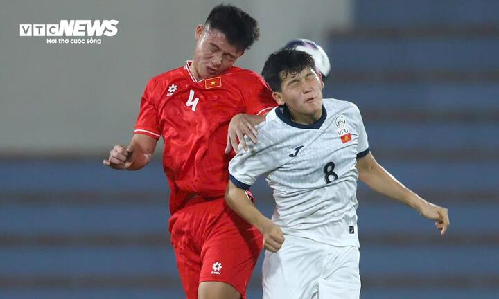

Trực tiếp bóng đá U17 Việt Nam 0-0 U17 Kyrgyzstan

Đội hình U17 Việt Nam vs U17 Kyrgyzstan
U17 Việt Nam: Hoa Xuân Tín (1) - Lê Huy Việt Anh (3), Nguyễn Hồng Quang (4), Lê Tấn Dũng (5), Phạm Đức Duy (14) - Đậu Hồng Phong (8), Nguyễn Việt Long (9), Nguyễn Văn Bách (11), Chu Ngọc Nguyễn Lực (12), Nguyễn Văn Khánh (17) - Nguyễn Thiên Phú (19).
U17 Kyrgyzstan: Aleksandr Shapkarin (13) - Aidar Muratbekov (4), Iskhak Nazhimidinov (5), Mukhammaddier Khamidulloev (12), Erbol Bakirdinov (18) - Aidar Altynbekov (8), Nursultan Alisherov (11), Innan Khe (14), Zhanbolot Ormonov (22) - Kairat Kanatov (7), Amantur Isakov (20).
Thông tin trước trận đấu
U17 Việt Nam đấu với U17 Kyrgyzstan ở vòng loại U17 châu Á 2025. Trận đấu diễn ra trên sân vận động Việt Trì (Phú Thọ) lúc 19h hôm nay 23/10.
U17 Việt Nam tập trung từ giữa tháng 9 và trải qua chuyến tập huấn tại Nhật Bản. Trước đó, ở giải đấu giao hữu đầu tiên kể từ khi nắm quyền, huấn luyện viên Cristiano Roland gây ấn tượng cùng các học trò khi đánh bại U17 Uzbekistan và U17 Nhật Bản.
Kết quả tốt và sự tiến bộ về mặt lối chơi trong các trận giao hữu gần đây của U17 Việt Nam mang đến nhiều hy vọng. Sau khi U20 Việt Nam không vượt qua vòng loại châu lục, người hâm mộ chờ đợi đội U17 thể hiện tốt hơn đàn anh để bóng đá trẻ Việt Nam không vắng bóng ở sân chơi châu Á.